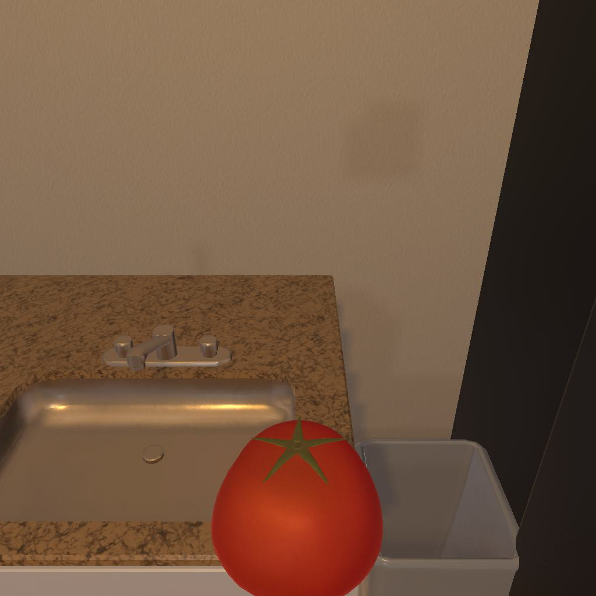
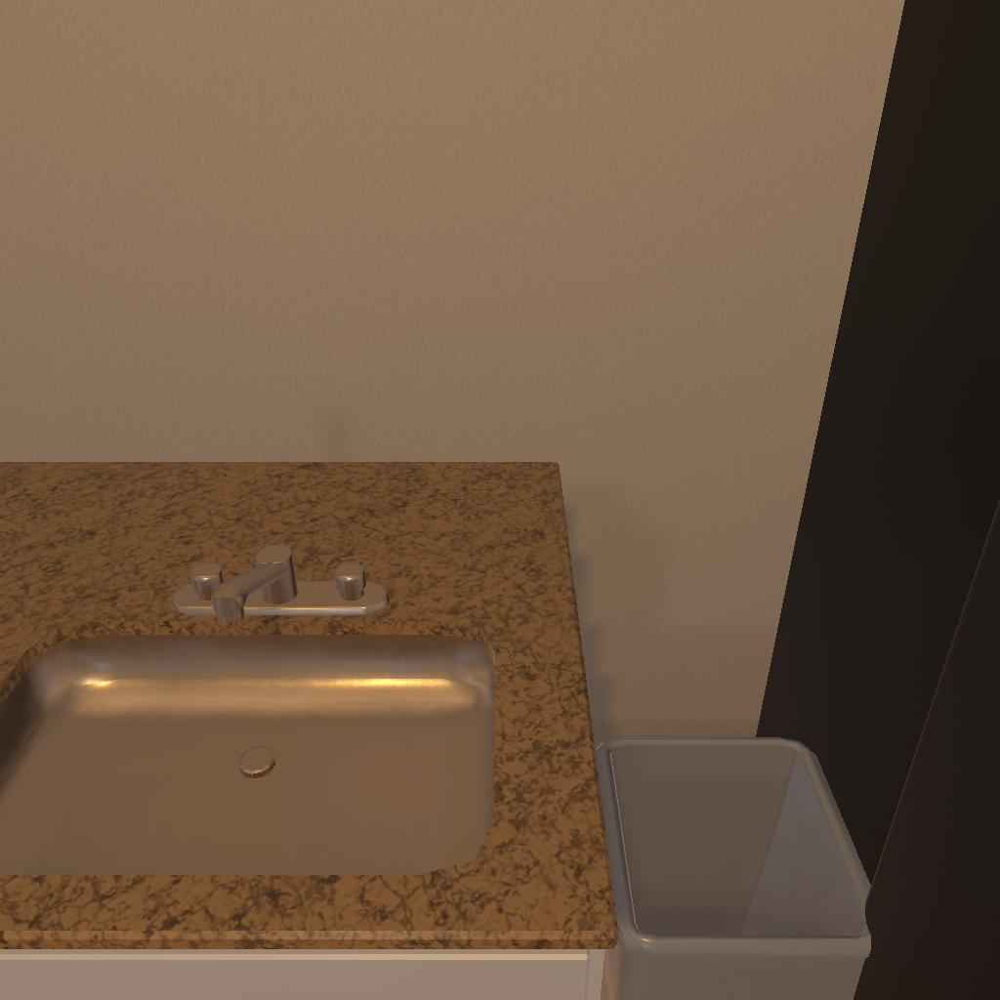

---------------------------------------------------------task: 13---------------------------------------------------------
--------------------------------------------------------------------------------------------------------------------------------------------------------------------
--------------------------------------------------------------------------------------------------------------------------------------------------------------------
Step:--------------------------------------------------------------------------9-------------------------------------------------------------------------------
----------------------------------------
VLM Prompt:
Image1:
Image2:
Image3:
**Instruction**
1. Analyze the provided images to identify all visible household objects and compare the difference between images (e.h. whether the object is opened or not and taken on hand or not), focusing on those relevant to the task description "put a clean tomato in garbagecan."
2. Use the analysis of images and the task hint "The agent must find an object of the desired type, pick it up, go to a sink or a basin, clean the object with a sink or basin, and then find the correct location to place it and put it down there. The agent does not need to use soap bottle or faucet to clean the object, and the agent just needs to do action that is "clean the object with the sink or sink basin"." to answer the question: what is the most reasonable action in the choices for the task description "put a clean tomato in garbagecan"?
3. Decide and write the answer using the template: The answer is: (i): , where i is the real number. If there is no desired object in images, search every place based on **Initial Observation** to find the object. And if no one is exactly correct, choose a similar answer.
**Initial Observation**
You are in the middle of a room. Looking quickly around you, you can see countertop (1-2), cabinet (1-11), garbagecan (1), toaster (1), sinkbasin (1), fridge (1), sink (1), microwave (1), drawer (1-3), stoveburner (1-4), coffeemachine (1), diningtable (1)
**Answer Choices**
(1): go to countertop 1
(2): go to cabinet 1
(3): go to cabinet 2
(4): go to cabinet 3
(5): go to cabinet 4
(6): go to toaster 1
(7): go to sinkbasin 1
(8): go to fridge 1
(9): go to cabinet 5
(10): go to microwave 1
(11): go to countertop 2
(12): go to cabinet 6
(13): go to cabinet 7
(14): go to drawer 1
(15): go to stoveburner 1
(16): go to stoveburner 2
(17): go to cabinet 8
(18): go to drawer 2
(19): go to stoveburner 3
(20): go to stoveburner 4
(21): go to coffeemachine 1
(22): go to cabinet 9
(23): go to cabinet 10
(24): go to cabinet 11
(25): go to diningtable 1
(26): go to drawer 3
(27): take faucet 1 from sink 1
(28): examine sink 1
**Answer**
Let's think step by step by following the instructions.
----------------------------------------
----------------------------------------
Original Response:
Image Analysis:
- Image 1 shows a tomato placed on the countertop next to the sink and garbagecan.
- Image 2 shows the countertop with the sink and garbagecan but without the tomato.
- Image 3 is identical to Image 2, showing the countertop without the tomato.
Based on the task description "put a clean tomato in garbagecan" and the analysis of images, it is clear that the tomato has already been placed on the countertop near the sink. Since the agent does not need to use soap bottle or faucet to clean the object, the most reasonable action would be to clean the tomato with the sink or sink basin and then put it in the garbagecan.
The images show that the tomato is no longer on the countertop, indicating that it has already been taken and possibly cleaned. Therefore, the next reasonable action would be to put the clean tomato in the garbagecan.
The answer is: (1): go to countertop 1
----------------------------------------
----------------------------------------
>>> Refine Original VLM Response and Get Pure Action: go to countertop 1
----------------------------------------
-----------------------------------------------------------------
Running time: 11.765890121459961 seconds
Total Money: 7.259190000000007
-----------------------------------------------------------------
-----------------------------------------------------------------
Text Observation:You arrive at loc 0. On the countertop 1, you see a plate 1, a pan 1, and a bread 1.
-----------------------------------------------------------------
UNSUCCEED